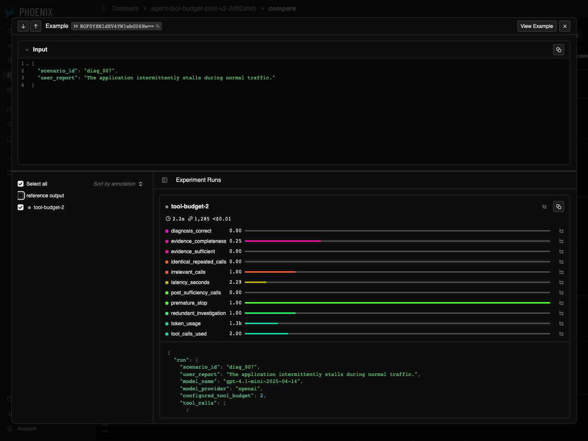
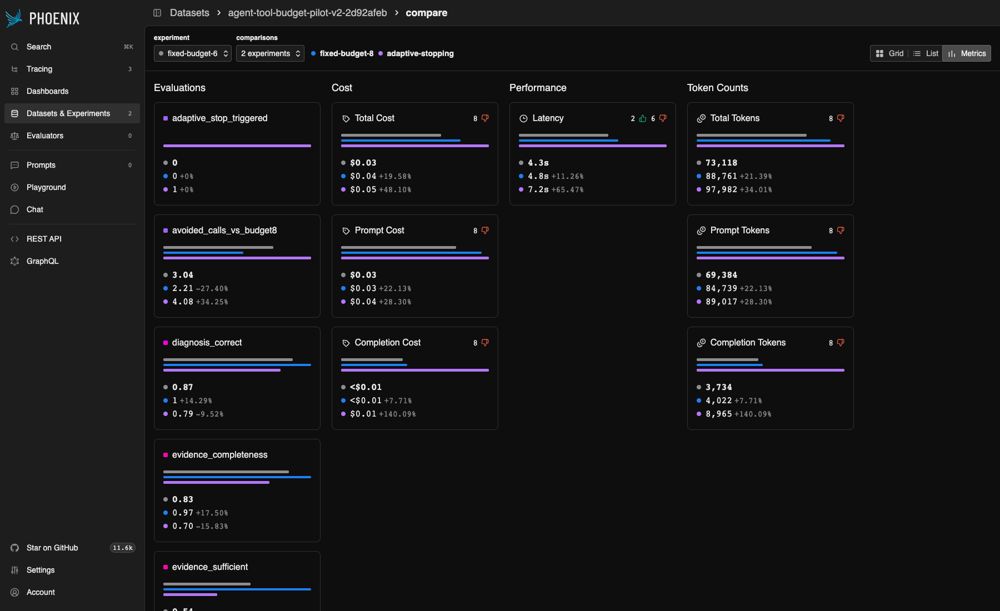
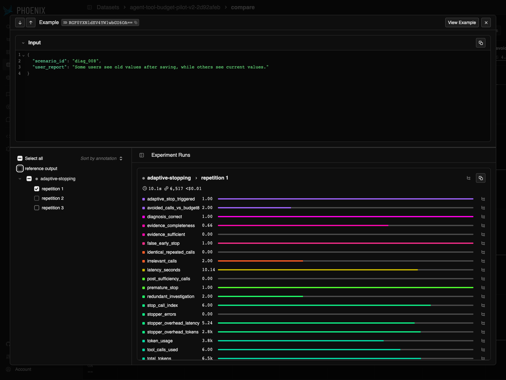

Original Microsoft baseline
Accuracy hid weak evidence, stable answers hid varying trajectories, and larger budgets exposed discriminating evidence. A frozen adaptive stopping policy stopped too early and increased system cost.
OpenClaw follow-up · Microsoft baseline · Arize Phoenix evaluation
Testing whether tool-budget and evidence-quality failures generalize across agent runtimes.
Cross-harness conclusion: YES, PARTIALLY GENERALIZED
Static replay · No API key, Python backend or running Phoenix required. * marks evaluations and analyses inspected in Phoenix.
Loading verified experiment artifacts…
A tool budget changes what an agent can know before it answers.
Tool-using agents need execution limits. Those limits are often treated as cost or safety controls, but they also affect evidence quality. This project began with Microsoft Agent Framework; feedback motivated a cross-harness replication on OpenClaw.
Accuracy hid weak evidence, stable answers hid varying trajectories, and larger budgets exposed discriminating evidence. A frozen adaptive stopping policy stopped too early and increased system cost.
Same core task, model snapshot, tools, deterministic environment and evidence rubric; different harness and execution semantics.
YES, PARTIALLY GENERALIZED
Three core patterns recurred. Execution-limit effects were only partially reproduced; runtime differences prevent a framework-causality claim.
Start with the OpenClaw follow-up, inspect its trace examples, then compare the historical baseline.
diag_007 and diag_008 × tool budgets 6/8 × five repetitions = 20 accepted runs. There were 21 physical attempts: one user-interrupted attempt was preserved and replaced in a fresh session. No adaptive stopping was tested in OpenClaw.
Model gpt-4.1-mini-2025-04-14, temperature 0; the same three diagnostic tools, deterministic environment, ground truth and evidence rubric. Fresh isolated sessions, no memory or extra tools, no provider recovery or fallback, strict final JSON validation, and the same eleven deterministic Phoenix evaluators.
Premature stop means required evidence was incomplete at termination, including forced budget exhaustion. It does not mean every stop was voluntary.
Means over ten accepted runs per budget. Diagnostic tokens include the loop’s intermediate answer; finalizer tokens are additional. Finalization latency includes phase setup. Total trace duration excludes some CLI startup/shutdown and is not directly comparable to Microsoft latency.
Budget 8 was not better on every outcome: one run was incorrect despite complete evidence. In diag_007 / budget 8 / repetition 5, the loop named database_connection_regression, but the separate finalizer returned api_configuration_issue. It did not see the prior answer. The incorrect result was retained.
Trace ID: 199b9e00b809344ad0ad62477e09843a. Accepted means protocol-valid, not necessarily correct.
| Finding | OpenClaw result |
|---|---|
| Correct diagnosis can hide insufficient evidence | REPRODUCED |
| Stable outcomes can hide trajectory instability | REPRODUCED |
| Higher budgets expose more discriminating evidence | REPRODUCED |
| Execution limits affect investigation quality | PARTIALLY REPRODUCED |
The OpenClaw follow-up reproduced several core failure modes, but runtime semantics differed. This is a cross-harness robustness study, not evidence that one framework causes better or worse agent behavior.
The matched Microsoft subset contained 20 runs across the same four scenario/budget groups: six correct-but-insufficient runs and trajectory variation in three groups. OpenClaw had ten such runs and variation in all four groups. The original Microsoft 50-run study’s 6/10 variation count has a different denominator.
Budget effects are descriptive. The causal effect of blocked-call versus tools-disabled stopping was not isolated. No framework superiority or latency superiority is claimed.
Static replay of three curated examples from the validated report. These are ordered calls and evaluations, not a live Phoenix connection or complete provider transcript.
diag_008 · budget 8 · repetitions 1 and 3. Different investigation paths ended with different evidence quality.
Compare repetition 1 at budget 6 (d844fa49a87054cf06c58b1d5d584b17) with repetition 1 at budget 8 (1d469ed64ab9c1a6295ca6d04368175b). The budget-8 run additionally retrieved cache logs and cache change.
More budget did not merely produce a longer answer; it changed what evidence became available. These are independent runs, not a replayed counterfactual.
Accuracy alone treated many runs as successful. Phoenix made it possible to see whether the investigation actually justified the answer.
Deterministic Python evaluators computed the scores; Phoenix attached them to runs and experiments so they could be inspected alongside ordered model/tool traces.
OpenClaw traces used normalized OpenInference spans with independent readback validation: one root, diagnostic model/tool spans, separate blocked-request spans, and one tools-disabled finalizer span. Eleven deterministic evaluations were verified for every accepted run. This static page displays saved findings and never reconnects to Phoenix.
The original study motivated the OpenClaw follow-up. Historical metrics and trace examples below retain their original phase boundaries. No Microsoft results were rerun or changed.
How much does an agent actually know when it decides to answer?
I intentionally chose a simple diagnostic environment because I wanted the experiment to focus on agent behavior rather than domain complexity.
Execution controls such as maximum function calls and iterations are often treated as cost or safety knobs. I wanted to test how those controls change reliability and evidence quality. Diagnostics let me separate a correct answer from the evidence supporting it; synthetic incidents provide objective ground truth and deterministic evaluation.
The question was whether limiting or dynamically stopping tool calls changed what the agent knew when it answered.
Eight incidents span four components: frontend, api, database, and cache. Tool outputs are deterministic for each scenario, while the model chooses the investigation path.
check_status(component)High-level health: availability, latency, CPU, connection counts. Useful for broad triage; health status alone may not establish root cause.
read_logs(component)Operational evidence: errors, timeouts, TLS failures, stale-cache behavior, full-table scans. Logs can distinguish a surface symptom from its cause.
check_recent_change(component)Recent deployments and configuration changes. A regression may be visible here even when the affected component appears healthy.
The symptom, tool schemas, and observations returned by tools already called.
Root cause, required evidence, supporting and distractor labels, difficulty, and evaluator outputs. The agent and controller do not receive these fields.
Some easy cases expose a cause directly in an early observation. Medium/hard cases require multiple components, deeper logs, and recent-change evidence to separate plausible symptoms from the underlying problem.
| Phase | Design | Purpose |
|---|---|---|
| Fixed-budget Phoenix sweep | 8 scenarios × budgets 2/4/6/8 × 1 run = 32 runs | Compare execution limits with deterministic evals attached in Phoenix |
| Targeted repeatability | 3 medium + 2 hard scenarios × budgets 6/8 × 5 repetitions = 50 runs | Test whether the same outcome implies the same trajectory |
| Final comparison | 8 scenarios × Fixed-6 / Fixed-8 / Adaptive × 3 repetitions = 72 runs; 24 per strategy | Test the frozen adaptive hypothesis against fixed budgets |
The adaptive controller ran after each tool result using the same model, returning STOP or CONTINUE with a hard maximum of eight tool calls. The final Fixed-6 / Fixed-8 / Adaptive metrics come only from the repeated final comparison. The earlier pilot is documented separately.
Fixed 2/4 replay the earlier Phoenix sweep (one run). Fixed 6/8/Adaptive replay the final comparison (three runs). Use Strategy comparison for conclusions within the same study.
32 primary runs: one per scenario/budget. These values belong to the sweep, not the later final comparison.
Higher budgets gave the agent more opportunities to acquire discriminating evidence. Budget 8 performed best in this sweep; it is not a universally optimal limit.

Eight scenarios × three strategies × three repetitions = 72 runs. Each column summarizes 24 runs from the final Phase 3 comparison. Tokens and latency include controller overhead.
Fixed-8 is the reliability reference for this workload. Fixed-6 costs less with reduced accuracy. This small synthetic study does not establish a universal best tool budget.
This screenshot uses Fixed-6 as its visual baseline; the percentages above compare Adaptive with Fixed-8.

The examples below compare tool outputs, evaluation annotations, and stopping decisions for specific recorded runs. Each examines a different relationship between the final diagnosis and the evidence collected during execution.
Evidence quality, repeatability, and runtime equivalence changed how I evaluated the system.
At first I treated diagnosis accuracy as the obvious success metric. Then I noticed runs that named the right cause without gathering the evidence I expected. The accuracy score looked successful, but I could not tell whether the investigation supported the answer.
I separated answer correctness from evidence quality. I defined required evidence for each scenario and added deterministic, post-hoc evals for correctness, evidence completeness, evidence sufficiency, and premature stopping. The agent and controller never saw those evaluation labels.
In Phoenix, I compared the attached evals with the observations available at the stopping point. That gave me a concrete way to explain a correct-but-insufficient run instead of treating its final label as a clean success.
A later example of this distinction: diag_008, Adaptive, repetition 1, reached the correct diagnosis with only 4 of 6 required evidence items.
I initially took repeated diagnoses as a sign that the behavior was stable. Inspecting traces challenged that assumption: the agent could reach the same answer through different tool paths and gather different evidence. Comparing final labels alone made those runs look equivalent.
I added a repeatability study for selected medium and hard scenarios at tool budgets 6 and 8. I compared tool-sequence signatures across repetitions and measured trajectory variation separately from diagnosis variation.
Phoenix let me inspect the individual paths behind those differences. In the linked pair, one run ended by checking an API change; the other read database logs. Seeing the observations alongside the shared diagnosis helped me distinguish a stable outcome from a consistently supported investigation.
Historical example in the Microsoft Baseline: diag_007, Fixed-6, repetitions 1 and 4 from the targeted repeatability study. The comparison includes the study-wide counts.
I could not treat the runtime swap as a library change alone. A transient transport failure triggered recovery with extra continuation context, and a model-call ID was reused. That made the effective treatment and accounting ambiguous.
I separated intended repetitions from physical attempts, rejected prompt drift, suppressed provider recovery, and preserved failed attempts before replacing them in fresh sessions. I also added an explicit tools-disabled finalizer and strict JSON validation. These controls made the comparison auditable, while leaving the prompt and finalization differences visible.
What I learned: validate the execution contract before comparing outcomes.
Cross-harness evaluation required validating the execution contract, not just swapping libraries.
Two scenarios, 20 accepted runs, one exact model snapshot, and fixed budgets only in a narrow synthetic diagnostic environment. No adaptive OpenClaw experiment was run. The unchanged evidence rubric scores observations after execution; ground truth and evaluation labels were hidden during inference.
OpenClaw uses an explicit adapter-level finalizer over frozen observed evidence. Diagnostic tools can remain visible after the cap; blocked calls never execute. The finalizer is isolated and tools-disabled. Effective prompts and stopping semantics differ from Microsoft, as do process and runtime overhead. Latency is not directly comparable, and this study establishes no framework causality.
Provider recovery was disabled. An interrupted attempt stayed in the ledger and was replaced using a fresh run ID/session. Its cost is unknown, not assumed zero, and excluded from accepted-run means.
Static replay uses a small report-derived JSON extract. Raw OpenClaw artifacts remain ignored; publication tests use minimal synthetic fixtures that are explicitly not research evidence. See the repository’s OpenClaw TESTING guide for offline tests and separate live setup.
Research question: How does an agent's tool budget affect reliability and efficiency?
Environment: eight synthetic scenarios across frontend, api, database, and cache.
Tools: check_status(component), read_logs(component), check_recent_change(component).
Agent: Microsoft Agent Framework. Model snapshot: , temperature 0.
In the fixed-budget sweep, only the maximum tool budget changed (2/4/6/8). The model, prompt, scenarios, tools, output schema, and environment stayed fixed. Parallel tool calls were disabled; an exact execution guard enforced the cap.
The adaptive configuration added a STOP/CONTINUE inference after each tool result using the same model, with a hard ceiling of eight calls. Its prompt was frozen before the results.
diagnosis_correct): canonical or explicitly accepted label match.evidence_completeness): fraction of required evidence retrieved.evidence_sufficient): all required evidence retrieved.premature_stop): investigation ends before evidence sufficiency.Evaluation-only root causes, evidence labels, and difficulty were hidden from the runtime agent and controller. Scoring happened afterward; no LLM judge was used. A correct diagnosis can still lack rubric evidence.
Phoenix was used to inspect model/tool traces, compare experiment configurations, and attach deterministic evaluations to runs. It exposed evidence gaps, distinguished forced from voluntary stopping, and linked every adaptive decision to the observations available at that moment.
This explained why the controller stopped on plausible intermediate causes and why fewer tool calls did not reduce total system cost.
Microsoft Agent Framework generated the execution behavior; Phoenix made that behavior inspectable and evaluable across experiments.

One model, eight synthetic scenarios. Model trajectories varied even at temperature 0, and request conditions affect latency. This page only reads frozen artifacts. It runs no agent, controller, or evaluation model.